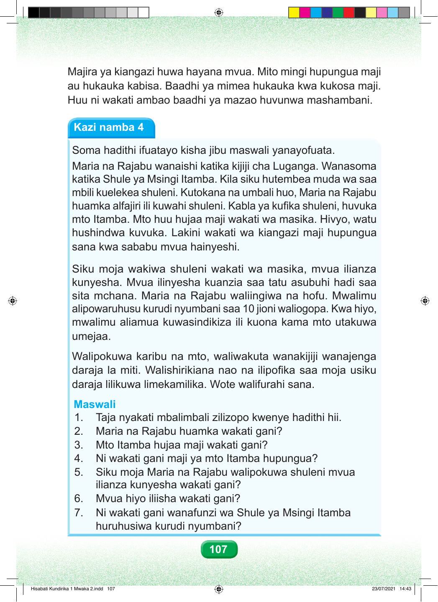

Majira ya kiangazi huwa hayana mvua. Mito mingi hupungua maji au hukauka kabisa. Baadhi ya mimea hukauka kwa kukosa maji. Huu ni wakati ambao baadhi ya mazao huvunwa mashambani. Kazi namba 4 Soma hadithi ifuatayo kisha jibu maswali yanayofuata. Maria na Rajabu wanaishi katika kijiji cha Luganga. Wanasoma katika Shule ya Msingi Itamba. Kila siku hutembea muda wa saa mbili kuelekea shuleni. Kutokana na umbali huo, Maria na Rajabu huamka alfajiri ili kuwahi shuleni. Kabla ya kufika shuleni, huvuka mto Itamba. Mto huu hujaa maji wakati wa masika. Hivyo, watu hushindwa kuvuka. Lakini wakati wa kiangazi maji hupungua sana kwa sababu mvua hainyeshi. Siku moja wakiwa shuleni wakati wa masika, mvua ilianza kunyesha. Mvua ilinyesha kuanzia saa tatu asubuhi hadi saa sita mchana. Maria na Rajabu waliingiwa na hofu. Mwalimu alipowaruhusu kurudi nyumbani saa 10 jioni waliogopa. Kwa hiyo, mwalimu aliamua kuwasindikiza ili kuona kama mto utakuwa umejaa. Walipokuwa karibu na mto, waliwakuta wanakijiji wanajenga daraja la miti. Walishirikiana nao na ilipofika saa moja usiku daraja lilikuwa limekamilika. Wote walifurahi sana. Maswali 1. Taja nyakati mbalimbali zilizopo kwenye hadithi hii. 2. Maria na Rajabu huamka wakati gani? 3. Mto Itamba hujaa maji wakati gani? 4. Ni wakati gani maji ya mto Itamba hupungua? 5. Siku moja Maria na Rajabu walipokuwa shuleni mvua ilianza kunyesha wakati gani? 6. Mvua hiyo iliisha wakati gani? 7. Ni wakati gani wanafunzi wa Shule ya Msingi Itamba huruhusiwa kurudi nyumbani? 107 Hisabati Kundirika 1 Mwaka 2.indd 107 23/07/2021 14:43